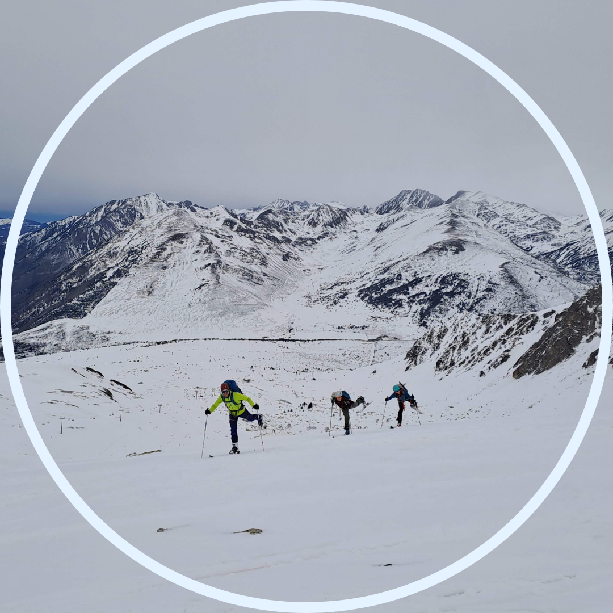
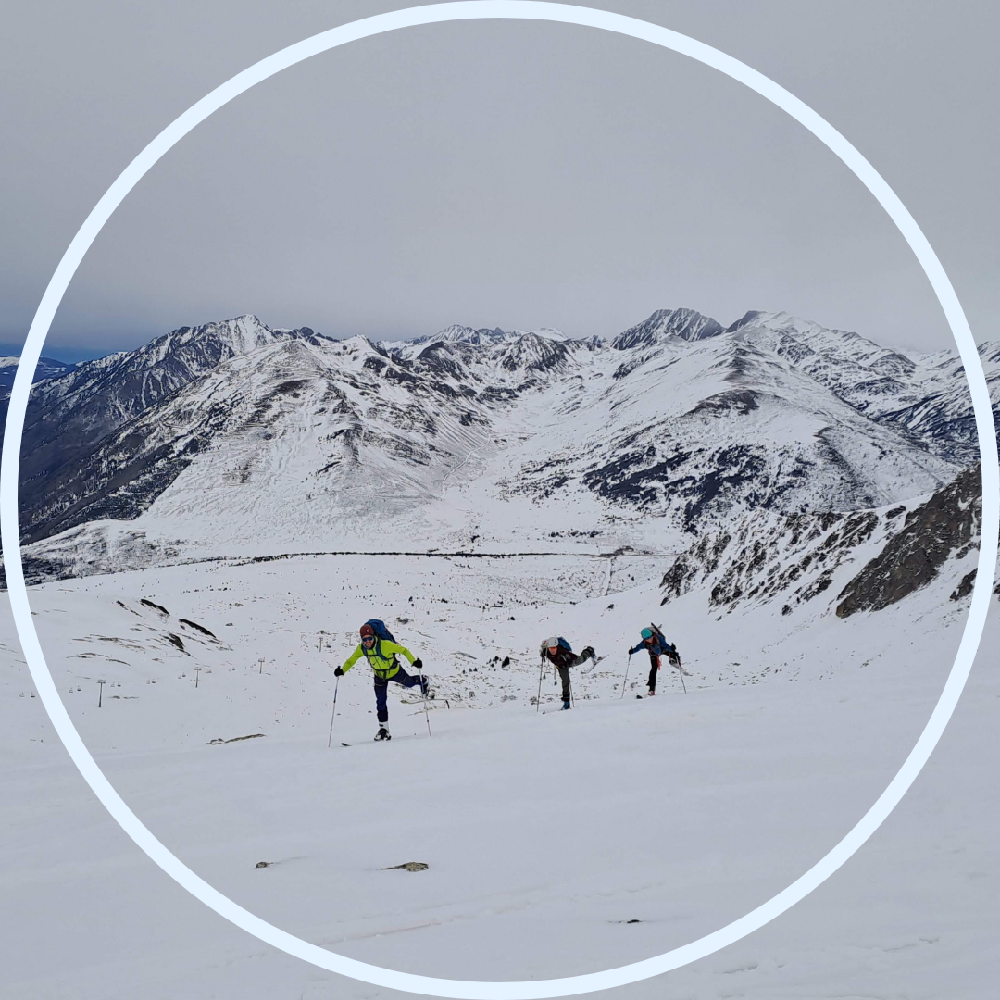

Bones! Benvingudes!
Reitero, la idea d'aquesta pàgina web és tenir un recull de les meves sortides, idealment d'aquí a molts anys continuaré fent muntanya i podré refer les sortides que feia de jove llegint directament la meva pròpia memòria. Si es fa pública, aleshores espero que també serveixi per noies i dones que volen fer muntanya sense tants homes. Començant per llegir o tenir ressenyes escrites per dones.
La meva introducció al món de l'esquí de muntanya ve del meu pare. Jo de petitona veia unes tires llargues penjades de la dutxa així peludetes els diumenges d'hivern, preguntava i em deien que eren de foca. Jo no entenia què volia dir, ni què implicava. Però tenia curiositat per fer-ho quan fos gran. El 2019 vaig fer la meva primera sortida de skimo amb mon pare i em va semblar una tortura. Com que només baixarem un cop? Per què pesa tant tot això? Per què em fa mal el genoll? En vaig fer un parell aquell any, però no va quallar. No va ser fins al 2023 què vaig tornar-me a posar esquís de muntanya, aquest cop amb els joves del CEC. Em continuava cansant molt, però tenia una companyia que m'animava molt i em donava conversa. Les baixades eren divertides i no em feien tant mal les cames (tot i caure diverses vegades). Tenia clar que era un esport que m'havia d'agradar, és la combinació de fer muntanya i pujar un cim amb esquiar. I esquiar m'encanta. Així que vaig decidir que de cara a la següent temporada em compraria el material, no volia anar-me deixant 50€ de lloguer cada dia d'activitat, sinó, no en faria gaire sovint. L'hivern del 2023 cap al 2024, coincidint amb el primer sou digne vaig decidir que si m'havia de comprar el material, havia de ser ara. I aquí estic, després d'haver trobat ofertes i rebaixes, amb una equipació ben xulona de skimo. I més forta que l'any passat per poder baixar sense que em facin figa les cames.
Aquí van les meves sortides de skimo:
24 de febrer 2024. Vam pringar bastant, però ens vam adonar que estem molt fortes! Vam haver de portejar els esquís bastant més tros del que pensàvem. Del cotxe al refugi amb els esquís a l’esquena, i un cop passat el refugi també vam portejar fins a arribar a tenir bona neu. Va ser la primera trobada hivernal de joves de la temporada, i amb el plus que la vaig organitzar jo. Important per a mi, era la primera sortida que feia com a vocal del CEC.
Un cop posats els esquís va començar a nevar, va ser una sortida ben maca. I la baixada deu ni dó com vam gaudir. Per mi, una de les baixades més disfrutones de skimo mai fetes.
Va estar nevant tota la nit de dissabte a diumenge, tant que diumenge vam poder sortir esquiant del refu i arribar al cotxe esquiant. De porta a porta amb els esquís, quina passada!
Del refugi de Montgarri vull dir que és una passada de lloc, unes lliteres molt divertides de 3 nivells que donaven molta privacitat. El menjar molt bo, dutxes amb aigua calenta i molt maca la gent que porta el refu. Això sí, car, molt car.
27 de febrer 2023. Primera sortida de skimo des del 2019.
9 de març 2024. Tremendo paqueton el d’aquesta nit. Deu n’hi dó, risc 3 d’allaus amb mida 2. Feia dos anys que no nevava tant segons els registres meteorològics. Hem dormit a Canillo, a una casa de colònies. Som el grup de joves del CEC, aquest cap de setmana hem sumat unes 20 persones.
Triem aquest itinerari comprovant que sigui terreny simple, ja que volem reduir al màxim el risc d’allaus. Vam arribar ahir al vespre a Canillo, la casa de colònies tenia un camp de bàsquet d’asfalt i hi havia neu acumulada. Com si de nens petits es tractés comença una guerra de boles de neu, jo intento fugir i que no me’n toqui cap. Disposem d’una sala comú on podem escalfar el sopar, hi ha una taula gran, cadires i un sofà. Un cop tots reunits comencem a parlar sobre les possibilitats de demà, jo tenia moltes ganes de fer el Montmalús, és un cim d’iniciació, però hi ha un tram amb pendent de 35º i de terreny exigent, com que hi ha risc 3 d’allaus creiem que més val no posar-nos-hi. Altres possibilitats serien el Pic de la Mina, també un cim d’iniciació per skimo. Però marcava molt vent i fer cim, anar per carenes no era ideal. Algú del grup proposa el Circ de Pessons i tots decidim que és bona opció.
Per les sortides de skimo, hivernals de fet, és important tenir present el triangle de: grup, terreny i coneixement. Aquí anàvem una mica fluixos, no tothom estava format en rescat en terreny d’allaus i érem un grup gran (coses a millorar per la propera). Per això sobretot era important anar per terrenys simples.
Va ser una sortida molt maca, el principi pujava pel bosc i després sortíem del domini de pistes i recorríem una vall. Aquí vam tenir ratxes de vent poc agradables però estàvem gaudint molt amb la neu recent caiguda, de fet ens va estar nevant tot el dia, semblàvem fins un núvol esponjós.
I després la baixada va ser brutal! Esquiar per neu pols és una cosa que no estem gaire acostumats i és un plaer! I com treballen les cames!! En el primer tram de baixada hi havia pocs arbres però després un cop vam enllaçar amb el domini esquiable es va convertir en slalom entre arbres i quina adrenalina! M’ho vaig passar taaaant bé.
Vaig descobrir que el meu impermeable havia perdut capacitats impermeables però todo okay, tenia roba per canviar-me al cotxe jeje.
10 de març de 2024. Quina diversió! Ai mareta quina adrenalina. Feia moolt de temps que no em sentia així, i quines ganes de repetir. Avui ens hem despertat amb risc 4 d’allaus, i de mida 3. Hem decidit anar a domini esquiable per disminuir els riscos. Està molt bé això de seguir un circuit marcat, el nostre “El circuit del Tarter: Obac”, cada 100m hi havia un cartell dient quants km faltaven, i de tant en tant unes fletxes indicant cap anar. Gens perdedor. Eren uns 5 Km amb 800 m de desnivell. Per pujar avui també era pel bosc, és una fantasia, m’ha recordat tant a Finlàndia! Avui tocava una mica més el sol i de tant en tant queia el paqueton de neu de la copa dels arbres sobre nostre, una loteria.
Nosaltres vam fer tota la pujada pel circuit i després vam baixar fins al encreuament amb les pistes de esquí alpí. Allà vam descansar i vam tornar a pujar per repetir la baixada. I mira que teníem les cames rebentades, però havíem de repetir aquella baixada entre arbres i arbustos que tant ens havia fet pujar l’adrenalina. Quins crits a cada gir, quina emoció! La baixada des del encreuament amb les pistes d’alpí fins al cotxe va ser per una blava facileta i amb poca gent, però ja necessitàvem aquest “descans”, va ser una baixada a full speed acompanyada de crits d’eufòria.
Quin grupet més maco, i quines ganes de repetir amb ells i elles.